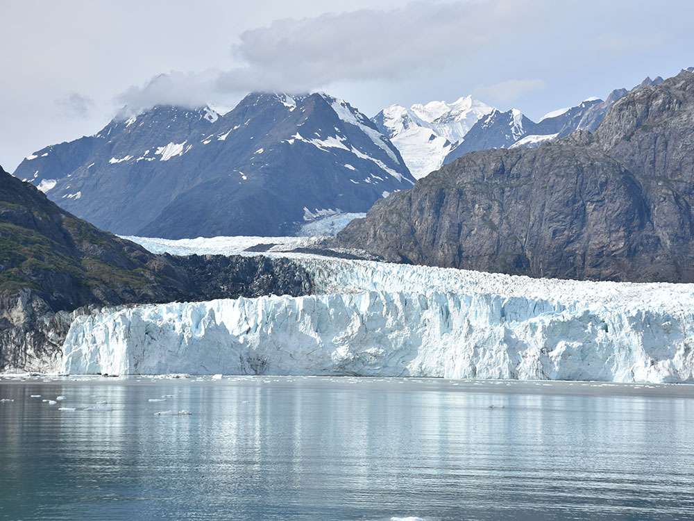
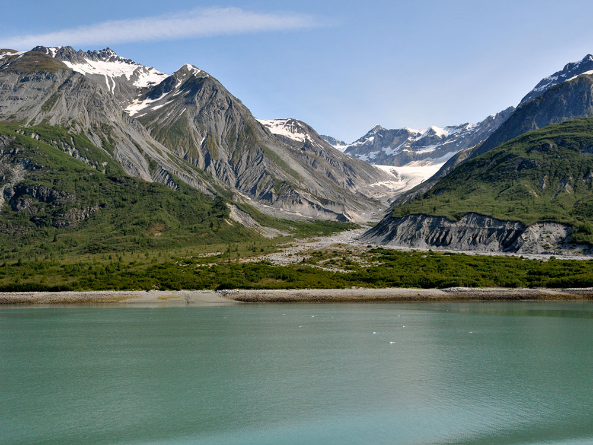

-400.jpg)
.jpg){kind=link}
Vast wilderness of tidewater glaciers, rugged mountains, temperate rainforest, and deep fjords shaped by dynamic natural forces and abundant wildlife.
General Information
Glacier Bay Visitor Center (upstairs in Glacier Bay Lodge): Late May through early September; hours vary
Glacier Bay Lodge and day boat: Late May through early September (May 21 to September 8 in 2026)
Limited or no services outside the summer season
No entrance pass required
Additional costs may apply for tours, boats, or lodging
How to Get There
From Juneau (65 mi): Travel by small plane or ferry to Gustavus, then follow the only local road approximately 10 miles to Bartlett Cove, where park headquarters and main visitor access points are located.
Overview
Glacier Bay National Park and Preserve protects 3.3 million acres of tidewater glaciers, snow-capped mountains, temperate rainforest, and wild coastline in Southeast Alaska, west of Juneau. The park is a showcase of glacial change. When Captain George Vancouver sailed through Icy Strait in 1794, Glacier Bay was barely a dent in a wall of ice more than 4,000 feet thick. By the time John Muir arrived in 1879, the ice had retreated about 48 miles, and today the bay stretches more than 65 miles inland. Its fjords end at towering tidewater glaciers such as Margerie, Grand Pacific, Johns Hopkins, and Lamplugh, below the Fairweather Range, where Mount Fairweather rises to 15,325 feet.
Glacier Bay is the ancestral homeland of the Huna Tlingit, who were forced out by advancing glaciers centuries ago and still maintain deep ties to the bay. It was proclaimed a national monument in 1925, partly to study how plants and animals return to land after glaciers retreat, and it became a national park and preserve in 1980. It is part of a 25-million-acre UNESCO World Heritage Site shared with Wrangell-St. Elias, Kluane, and Tatshenshini-Alsek parks, and it is also a UNESCO Biosphere Reserve. About 700,000 people visit each year, most aboard cruise ships, to watch glaciers calve into the sea and to look for humpback whales, sea otters, bears, and mountain goats.
Park Sections
Bartlett Cove, about 10 miles from the small town of Gustavus, is the park's only developed area. It has Glacier Bay Lodge, the visitor center, a campground, the Huna Tribal House, a public dock, and the park's only trails. From there, Glacier Bay itself stretches north for more than 65 miles and splits into two main arms. The West Arm leads to Tarr Inlet, with Margerie and Grand Pacific Glaciers, and to Johns Hopkins Inlet. The quieter East Arm (Muir Inlet) is a wilderness area popular with kayakers, with restrictions on motorized boats. The park also includes a wild outer coast along the Gulf of Alaska, including Lituya Bay, and the Glacier Bay National Preserve near Dry Bay, at the mouth of the Alsek River. Beyond Bartlett Cove, the park is explored almost entirely by boat or plane.
Sightseeing and Exploring the Park
There are no roads into the heart of the park, so in Glacier Bay the scenic drive is a boat trip. The daily Glacier Bay day boat leaves Bartlett Cove each summer morning for an 8-hour cruise up the West Arm to Margerie Glacier, with a park ranger on board. It operated from May 22 to September 7 in 2026. Highlights along the way include South Marble Island, with its sea lions and seabirds, Gloomy Knob, where mountain goats cling to the cliffs, and the face of Margerie Glacier, where house-sized chunks of ice crash into the water. Many visitors see the park on a large cruise ship. A limited number are permitted each day, and park rangers board to provide commentary. Flightseeing tours from Gustavus, Juneau, Haines, and Skagway fly over the glaciers and the Fairweather Range.
Hiking
All of the park's maintained trails are at Bartlett Cove, and they are short and mostly easy. The 1-mile Forest Loop Trail winds through mossy spruce and hemlock rainforest to the beach. The Tlingit Trail follows the shoreline past the Huna Tribal House. The Bartlett River Trail (about 4 miles round trip) leads to an estuary where bears, moose, and salmon are sometimes seen, and the Bartlett Lake Trail (about 8 miles round trip) continues to a quiet forest lake. Rangers lead guided walks in summer. Beyond Bartlett Cove, there are no trails. Experienced backpackers and kayakers can arrange drop-offs from the day boat at designated sites up the bay to explore the wilderness on their own.
Other Activities
Sea kayaking is one of the best ways to explore Glacier Bay. Visitors can rent kayaks or join guided half-day trips from Bartlett Cove, while experienced paddlers can take multi-day trips into the East and West Arms using the day boat for drop-offs and pickups. At the Xunaa Shuká Hít (Huna Tribal House), which opened in 2016 at Bartlett Cove, visitors can learn about Tlingit culture through programs and demonstrations. Other activities include ranger programs, fishing charters for halibut and salmon from Gustavus, whale watching in Icy Strait, mountaineering in the Fairweather Range, and multi-week rafting trips down the Tatshenshini and Alsek Rivers, which end in the park's preserve at Dry Bay.
Flora and Wildlife
Glacier Bay is a living laboratory of plant succession. Near the glaciers, bare rock is slowly colonized by mosses, fireweed, and mountain avens, followed by alder and willow thickets. At Bartlett Cove, where the ice melted about 250 years ago, a mature spruce and hemlock rainforest has grown. The park is also famous for its marine wildlife. Humpback whales feed in the bay all summer, and boats must follow speed limits and approach rules to protect them. Orcas, harbor seals, harbor porpoises, Steller sea lions, and a growing population of sea otters are also common. Thousands of harbor seals give birth on floating ice in Johns Hopkins Inlet, which is closed to boats during pupping season. On land, visitors may see brown and black bears, mountain goats, moose, and wolves, and seabirds such as tufted puffins nest on the islands.
Access
There are no roads to Glacier Bay. Most visitors arrive on a cruise ship sailing the Inside Passage. Independent travelers first fly to Juneau, then take a short flight to the small town of Gustavus, about 30 minutes away. Alaska Airlines offers seasonal jet service in summer, and small air taxis fly year-round. The Alaska Marine Highway ferry also serves Gustavus on a limited schedule. From Gustavus, a 10-mile road leads to Bartlett Cove, and the lodge and local taxis provide transportation. Private boaters can visit but need a permit from June through August.
Seasons
The park is open all year, but almost all services operate only from late May to early September. In 2026, Glacier Bay Lodge was open from May 21 to September 8. Summer is cool and often rainy, with highs in the 50s and 60s°F, long daylight hours, and the best whale watching from June through August. Late spring brings migrating birds and the first boat tours, while fall brings more rain, storms, and very few services after early September. In winter, the park is dark, snowy, and quiet, with access limited to occasional flights to Gustavus. Some areas, such as parts of Johns Hopkins Inlet, close seasonally to protect seals and nesting birds.
Camping and Lodging
Glacier Bay Lodge at Bartlett Cove is the only lodging inside the park. It has rooms, a restaurant, and the departure point for the day boat, and it is open only in summer. The free, walk-in Bartlett Cove Campground sits in the forest along the shore. Campers must attend a short orientation and store food in bear-resistant caches. Backcountry camping is allowed throughout the park with a free permit. The nearby town of Gustavus has several inns, lodges, cabins, and bed-and-breakfasts, many offering meals, bikes, and fishing or whale-watching trips. Many visitors also stay in Juneau and fly to Gustavus for a day or more, and cruise ship passengers see the park without leaving their ship.
Visitor Centers
The Glacier Bay Visitor Center is upstairs in Glacier Bay Lodge at Bartlett Cove. It has exhibits on glaciers, wildlife, and Tlingit culture, a film, a bookstore, and a ranger desk, and it is open in summer. The Visitor Information Station at the head of the public dock issues permits and orientations for campers, kayakers, and boaters. Nearby, the Xunaa Shuká Hít (Huna Tribal House) serves as a gathering place for the Huna Tlingit and offers cultural programs for visitors. Hours vary by season.
Things to Do
Experience a UNESCO World Heritage Wilderness
Glacier Bay National Park and Preserve protects more than three million acres of glaciers, fjords, mountains, forests, and marine ecosystems in Southeast Alaska. The park is internationally recognized for its spectacular landscapes, active glaciers, abundant wildlife, and ongoing scientific importance as one of the world's most remarkable examples of glacial change.
View Massive Tidewater Glaciers
Glacier viewing is the park's signature attraction. Visitors can witness immense glaciers such as Margerie Glacier, Grand Pacific Glacier, Lamplugh Glacier, and Johns Hopkins Glacier. Watching ice calve from these glaciers into the bay is one of Alaska's most unforgettable natural experiences.
Take a Glacier Bay Boat Tour
Most visitors experience the park by water. Cruise ships, day-tour vessels, charter boats, and private vessels travel through the fjords, providing excellent opportunities to view glaciers, dramatic mountain scenery, and marine wildlife from the comfort of the bay.
Explore Bartlett Cove
Bartlett Cove is the park's only developed area and serves as the main gateway to Glacier Bay. Visitors can access the visitor center, Glacier Bay Lodge, walking trails, kayak rentals, ranger programs, a public dock, and a campground while exploring the surrounding rainforest and shoreline environments.
Go Sea Kayaking
Kayaking provides an intimate way to experience Glacier Bay's wilderness. Paddlers can explore sheltered coves, forested shorelines, glacial fjords, and remote beaches while enjoying opportunities to observe wildlife and experience the park's natural beauty at a slower pace.
Watch for Whales and Marine Wildlife
Glacier Bay supports an impressive variety of marine life. Visitors frequently observe humpback whales, harbor seals, sea otters, Steller sea lions, porpoises, and seabirds throughout the park's waters. Whale watching is often one of the highlights of a Glacier Bay visit.
Join Ranger-Led Programs
National Park Service rangers offer educational programs throughout the season. Ranger talks, guided walks, visitor center exhibits, and presentations aboard tour vessels help visitors learn about glaciers, wildlife, ecology, cultural history, and conservation efforts.
Experience True Backcountry Wilderness
Glacier Bay contains vast designated wilderness areas ideal for experienced adventurers. Backpacking, camping, mountaineering, rafting, and wilderness travel provide opportunities to explore some of Alaska's most remote and pristine environments.
Top Trails
Forest Loop Trail
Length: Approximately 1 mile loop
Elevation Gain: Minimal
Difficulty: Easy
Located in Bartlett Cove, this easy trail leads through a temperate rainforest of spruce and hemlock while providing opportunities to observe birds, wildlife, and the diverse ecosystem that has developed following glacial retreat.
Bartlett River Trail
Length: Approximately 4 miles round trip
Elevation Gain: Minimal
Difficulty: Easy to Moderate
This popular hiking trail follows the Bartlett River through forest and meadow habitats. Visitors often encounter birds, moose, bears, and other wildlife while enjoying views of the surrounding wilderness.
Shoreline Trail
Length: Approximately 1 mile one way
Elevation Gain: Minimal
Difficulty: Easy
Connecting Bartlett Cove with the Glacier Bay Lodge area, this scenic coastal route follows the shoreline and provides beautiful views of the bay, snow-capped mountains, marine wildlife, and nearby islands.
This article uses material from the Wikipedia article "Glacier Bay National Park and Preserve", which is released under the Creative Commons Attribution-Share-Alike License 3.0
This article uses material from nps.gov "Plan Your Visit", "Visitor Centers", "Glacier Bay Lodge", and "2026 Glacier Bay Lodge Hours and Rates"



.jpg){kind=link}